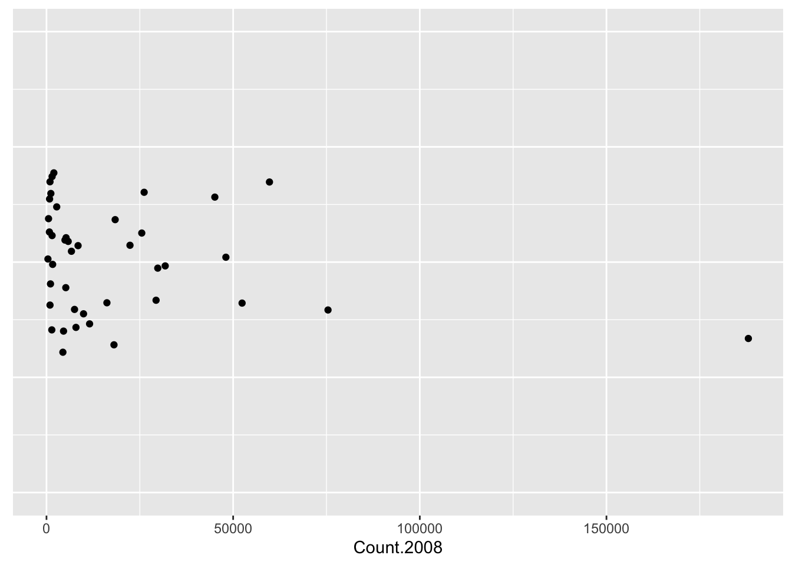
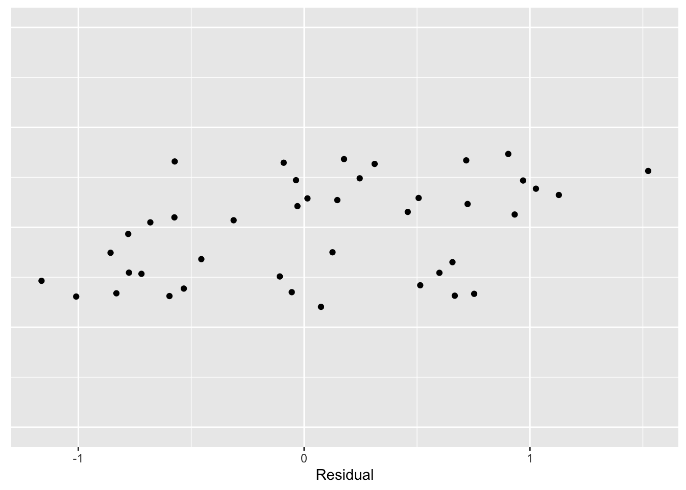

2 Introduction
2.1 What is data analysis?
This is a course in “data analysis”. Although you have heard this expression many times, you probably don’t have a clear idea of what it means. Here is a description of data analysis written by Paul Velleman and David Hoaglin in their article “Data Analysis”, in Perspectives on Contemporary Statistics.
“As the link between statistics and diverse fields of application, data analysis confronts the challenge of turning data into useful knowledge. Data analysis combines an attitude and a process, supported by well-chosen techniques. The attitude distills the scientist’s curiosity about regularity, pattern, and exception. The process iteratively peels off patterns so that we can look beneath them for more subtle (and often more interesting) patterns. The techniques make few assumptions about the data and deliberately accommodate the unexpected.”
Essentially exploratory data analysis (abbreviated as EDA) can be viewed as numerical detective work. We are confronted with one or more batches of data and we are trying to uncover patterns in the numbers. Data analysis can be thought of as detective work since it has similarities to the work of a detective, such as the famous Sherlock Holmes, who uncovers a mystery (like the identity of a murderer) from the different evidence that he collects. Our objective in data analysis is to summarize the general structure in the numbers. By doing this, we can describe in a relatively simple way of what the data is telling us.
2.2 What is data and where do we find it?
Data are simply numbers with a particular context. For example, the number 610 is data when you are told that 610 represents the number of people who immigrated to the United States from Austria in 1998. Data doesn’t need to be a random sample from some hypothetical population. It is simply numbers that we care about and wish to organize and summarize in some effective way.
In this class, you will need to find your own datasets. Where do you find data? Actually, data is present everywhere – in newspapers, the Internet, and in textbooks. One convenient source of a wide variety of data is the well-known almanac or book-of-facts. (I will be using the 2010 New York Times Almanac which is typical of a world almanac that is available for sale.) Many types of almanacs are available at the library. I recommend purchasing one of the inexpensive paperback almanacs sold at a bookstore. It will be convenient to access an assortment of datasets if you have an almanac readily available.
2.3 Meet our first data
Here is a good time to introduce you to our first dataset. Browsing through my almanac, there is a section on immigration in the United States. In this section, the following table is displayed on page 310 that shows the estimated number of U. S. immigrants in 2008 from various countries. The table gives the name of each country, the region of the world in which the country belongs, and the 2008 immigration count from that country. This data is contained in the dataset immigrants in the LearnEDA package. I have listed the first few rows of this data table.
library(LearnEDAfunctions)
head(immigrants)## Country Region Count.1998 Count.2008
## 1 Austria Europe 610 1505
## 2 Belgium Europe 557 829
## 3 Czechoslovakia Europe 931 1650
## 4 Denmark Europe 447 551
## 5 France Europe 2961 5246
## 6 Germany Europe 6923 8456Obviously, it is hard to understand general patterns in these immigration numbers by just looking at the table. We are interested in using graphs and summaries to better understand the general structure in these data.
It is usually helpful to list some general questions that we have about these data. Here are a few questions that quickly come to mind:
- What countries have contributed the most immigrants to the United States?
- What is a typical number of immigrants from a country?
- Are Asian countries contributing more or less immigrants than countries from Europe?
- The magazine Time had an issue that focused on the U.S./Mexico border. Are we getting an unusually large number of immigrants from Mexico?
- Which countries are contributing a large number of immigrants relative to their population size?
We probably won’t answer all of these questions in our preliminary data analysis, but it is always important to think of things that you wish to learn from your data.
2.4 How does exploratory data analysis (EDA) differ from confirmatory data analysis (CDA)?
So we can think of exploratory data analysis (EDA) simply as looking for patterns (and deviations from these patterns) in data. This type of data analysis is fundamentally different from the way that most of us learned statistics. Let’s illustrate the typical way we learned to analyze a single batch of data.
In this approach, we assume that the data represent a random sample drawn from a hypothetical normally distributed population. With this assumption, a ``best” guess at the average of the population is the mean. We consider several inferential questions. We construct an interval that we are confident contains the population mean, and we make decisions about the value of the population mean by one or more hypothesis tests. This methodology, based on the t distribution, is well known and available using any statistical software package.
This approach is called confirmatory data analysis or CDA. We analyze data by the use of probability models. We write down a family of probability models that could have generated the observed data, and we learn about the data by estimating the unknown parameters of these models.
2.5 How is EDA different from CDA?
First, in EDA we make no assumptions about an underlying population. We don’t assume that the data represent independent observations or that the data come from a population with a prescribed shape. The data are simply viewed as numbers that we wish to explore.
Second, the goals of EDA are different from that of CDA. The goal of CDA is to learn about the underlying population – statistical inference is the goal of CDA. In contrast, there are no inferential goals in EDA. We are focusing our analysis on the data at hand, instead of worrying about characteristics of a hypothetical population.
I don’t want to give you the impression that EDA is in some sense better than CDA. Rather, data analysis typically consists of both EDA and CDA. In a typical data analysis, we will use EDA methods to discover basic patterns or structure in the data. Then we may later use inferential methods to make statements about underlying populations.
2.6 John Tukey’s contribution
Exploratory data analysis will always be associated with John Tukey, who was one of the greatest statisticians in history. It would be wrong to say that Tukey invented EDA. Rather, Tukey was the first to organize a collection of methods and associated philosophy into what we call EDA. There is an orange text called EDA that describes this work. Some of the data analysis methods Tukey used were novel and he gave them interesting names, like stem-and-leaf, boxplot, resistant smooth, and rootogram. It is natural for students to focus on the particular data analysis methods developed by Tukey. But Tukey’s legacy in this area was not the EDA methods but rather the particular data analysis philosophy that underlies the development of these methods.
2.7 Four principles of EDA (the four R’s)}
Although we will discuss a variety of methods useful for exploring data, they all share different characteristics that underlie the philosophy of EDA. We call these principles the four R’s since each principle starts with the letter r.
Revelation: In EDA, there is an emphasis on using graphs to find patterns or displaying fits. Effective displays of data can communicate information in way that is not possible by the use of numbers. A good rule of thumb is to always graph your data before commuting any summary statistic. There will be a lot of graphing in this course, and we’ll discuss guidelines for constructing effective graphs.
Resistance: In EDA, we wish to describe the general pattern in the majority of the data. In this detective work, we don’t want our search to be unusually affected by a few unusual observations. So it is important that our exploratory method is resistant or insensitive to outliers. When we look at a single batch of numbers, we’ll see that the median or middle value (when the data are arranged in ascending order) is an example of a resistant measure. The mean or arithmetic average is nonresistant since it can be distorted by one or more extreme values.
Reexpression: We will see that the natural scale that the data is presented is not always the best scale for displaying or summarizing the data. In many situations, we wish to reexpress the data to a new scale by taking a square root or a logarithm. In this class, we will talk about a useful class of reexpressions, called the power family, and give guidance on the ``best” choice of power reexpression to simplify the data analysis.
Residual: In a typical data analysis, we will find a general pattern, which we call the FIT. The description of the FIT may be very informative. But in EDA we wish to look for deviations in the data from the general pattern in the FIT. We look at the residuals, which are defined as the difference between the data and the FIT. \[ RESIDUAL = DATA - FIT \] In many situations, we will see that a careful investigation of the residuals may be more interesting than the fit.
2.8 An exploratory look at our data
Let’s illustrate a few of the EDA principles in an analysis of our immigration data. We start with a graph of the immigration counts. A simple graph is a stripchart that represents each value by a dot over the appropriate place on a number line. The points have been randomly jittered in the vertical direction so one can see overlapping points.
library(tidyverse)
ggplot(immigrants,
aes(x = Count.2008, y = 1)) +
geom_jitter() + ylim(0, 2) +
theme(axis.title.y=element_blank(),
axis.text.y=element_blank(),
axis.ticks.y=element_blank())
Looking at this stripchart, we see that most of the immigration counts are clustered between 0 and 30,000 with only six countries appear to have large counts.
This is really not a very useful graphical display since most of the data is bunched up towards the value zero. In other words, this data is strongly right-skewed. Due to this right-skewness, all we have learned is that there are a few countries with large numbers of immigrants and Mexico, with 188,015 immigrants, stands out.
What we see in this stripchart is that the original data (counts of immigrants) is not the best scale for viewing in a graph. We can improve the presentation of these data by reexpressing the counts by taking logs. That is, we reexpress Austria’s count 1505 to log(1505) = 2.79, reexpress Belgium’s count 557 to log(557) = 3.18, and so on for all of the immigrant counts. (By the way, when we take logs in this class, they will all be log base 10.)
immigrants <- mutate(immigrants,
log.Count = log10(Count.2008))Here is a stripchart of the logarithms of the immigrant counts:
ggplot(immigrants,
aes(x = log.Count, y = 0)) +
geom_jitter() + ylim(-1, 1) +
theme(axis.title.y=element_blank(),
axis.text.y=element_blank(),
axis.ticks.y=element_blank())
This is a much better graphical display for viewing these data. The log counts are evenly spread out between 2.50 and 5.20 and one can see more interesting structure in the data. In particular, we see a clump of countries with log immigration counts around 3, and a second concentration of log counts around 4. A typical log immigration count can be seen to be about 3.75. We still see Mexico’s large log count of 5.27; but now we also see a small log count at 2.58 that corresponds to Norway.
We can summarize these data by the typical value of 3.75 – this is our FIT to these data. We can compute residuals by subtracting the FIT from each log count: \[ RESIDUAL = \log COUNT - FIT \] \[ = \log COUNT - 3.75 \]
immigrants <- mutate(immigrants,
Residual = log.Count - 3.75)The stripchart below graphs the residuals of the data:
ggplot(immigrants,
aes(x = Residual, y = 0)) +
geom_jitter() + ylim(-1, 1) +
theme(axis.title.y=element_blank(),
axis.text.y=element_blank(),
axis.ticks.y=element_blank())
Now we can look at these data in more detail. We see that, on the log count scale, two countries have immigration counts that are 1 smaller than the average; also there is one country (Mexico) that is approximately 1.5 larger than the average. This residual graph tells how close the log counts are to the average of 3.75.
This example illustrates a few of the EDA principles that we’ll be using throughout the course.
- It illustrates the use of graphical displays to see basic patterns in data.
- It shows that the scale of the original data may not be the best scale for viewing data and one can reexpress the data by a suitable transformation (here logs) to improve the presentation of the data.
- One can easily summarize the reexpressed data by a ``typical” value, and residuals can be computed that show the deviations of the data from this typical value.
2.9 Summing Up
Let’s return to our questions about these data to see what we have learned in this brief data analysis:
- What countries have contributed the most immigrants to the United States?
ANSWER: Mexico is by far the leader in supplying immigrants to the U.S.
- What is a typical number of immigrants from a country?
ANSWER: On the log scale, a typical immigrant count is 3.75.
- Are Asian countries contributing more or less immigrants than countries from Europe?
ANSWER: We didn’t address this question in our brief analysis, but we’ll soon talk about how we can compare batches of data.
- The magazine Time had an issue that focused on the U.S./Mexico border. Are we getting an unusually large number of immigrants from Mexico?
ANSWER: Yes – this analysis confirms that Mexico is supplying many immigrants.
- Which countries are contributing a large number of immigrants relative to their population size?
ANSWER: In order to answer this question, we would need to collect the populations of the countries in the table. This would be an interesting study.